🔥 Top 3 (must read)
Working with AI feels more like leadership than coding
(HN discussion, 275 points) — The author argues that daily work with coding agents now looks like managing people: you set direction, delegate, review, and correct, instead of typing the code yourself. The big HN thread has strong pushback and good counter-examples. As an EM, this maps your existing skills (delegation, review, feedback) directly onto how your team should work with AI.
A
Don't trust "Done." — forcing AI agents to re-fetch reality before they report completion
An agent reported "Inserted N rows. Done." but zero rows had landed; the author now forces agents to re-check the real system state (query the DB again, hit the API again) before they may claim success. A practical pattern for anyone running agents on production tasks. If your team automates work with Claude Code or similar, this "verify, then report" rule is cheap insurance.
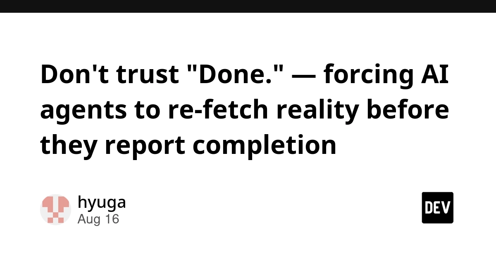
Single Agent vs Multi-Agent Systems: When to Split
A working single agent does not need to become five specialized agents just because framework marketing says so; the post gives concrete signals for when a split actually helps. Good antidote to over-engineering. Useful when your team designs its first agent workflows and someone proposes a "team of agents" too early.
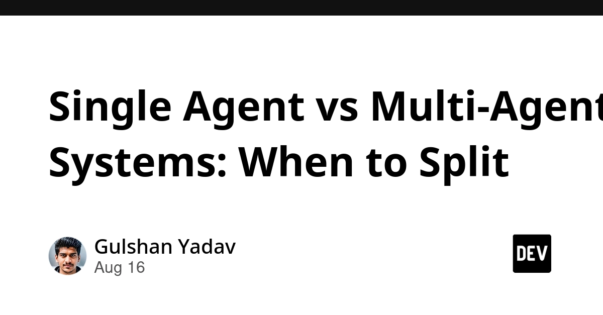
🛠 Tools & releases
React useLatest Hook: Read Fresh State in Async Callbacks
a small hook that fixes stale state inside async callbacks (autosave, timers). Classic React footgun with a clean fix.
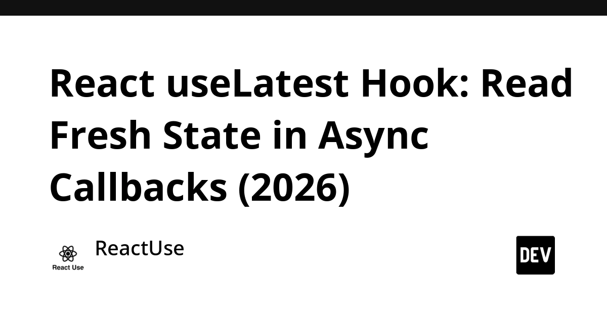
How to build and ship an iOS app without a Mac
the real options for signing and shipping when no one on the team owns a Mac; applies to Flutter too.
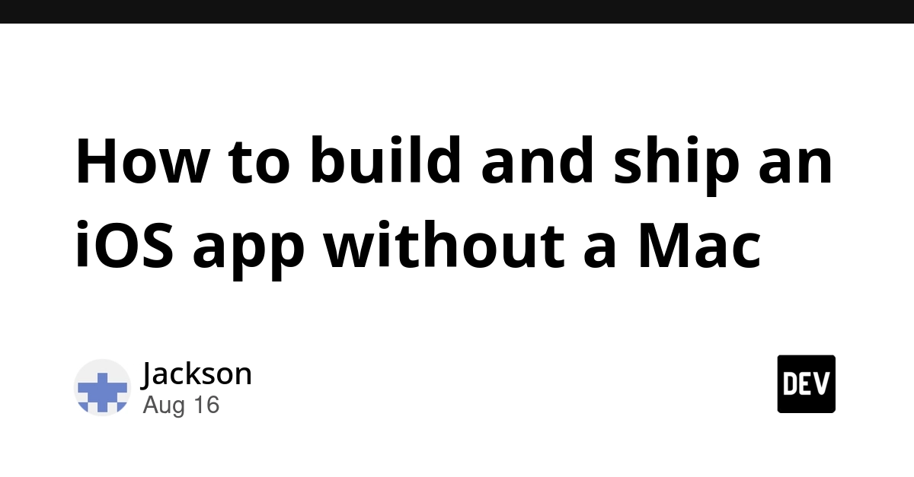
The actual cost of shipping an iOS app in 2026
a full cost breakdown, split into mandatory (the $99/year developer program) and optional spend.
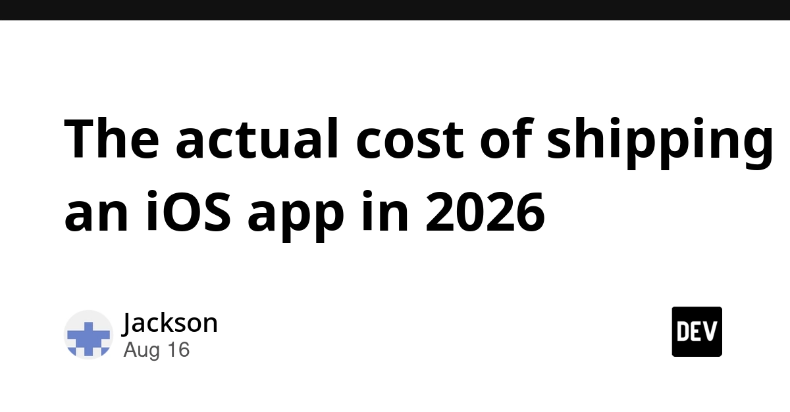
🤖 AI for developers
When an Agent Tool Call Becomes a Real Request
a production bug where a date filter silently got lost between the model's tool call and the database query, so the agent answered with confidence about the wrong data. Good lesson on validating the boundary between LLM output and real queries.
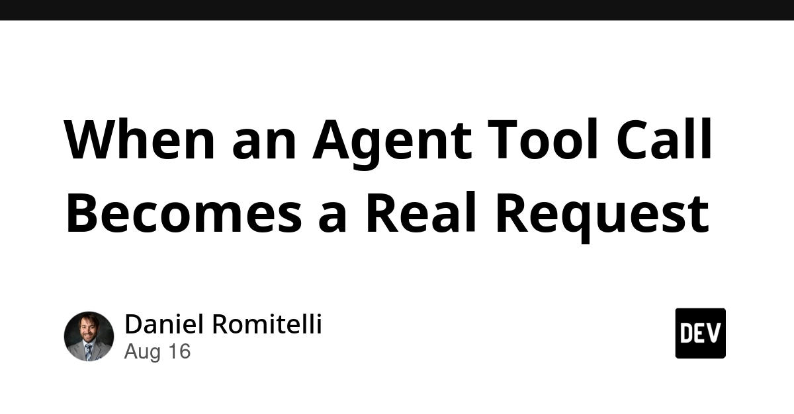
CORS Chat
Simon Willison's small web UI for testing any OpenAI-Responses-compatible chat endpoint (LM Studio, OpenRouter) straight from the browser.
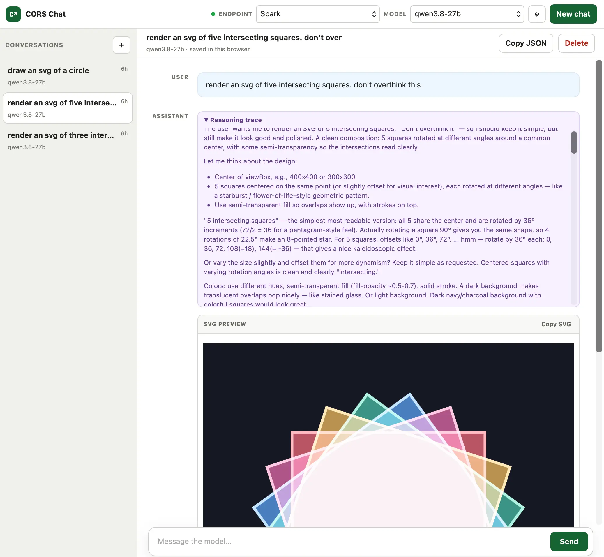
👔 Engineering & teams
Covered in Top 3 today: the "working with AI feels like leadership" essay is the main teams story. Nothing else qualified.
🎯 For me
useLatest hook
The is directly usable in your TypeScript/React work — check your autosave and polling code for this stale-closure bug.
without a Mac
The two iOS shipping posts (, true costs) matter for your Flutter releases and for budgeting side projects.
The agent-reliability pair ("Don't trust Done" + "tool call becomes a real request") is the strongest EM material today: both suggest team rules for adopting agents safely.
💡 App ideas & indie builds
ThoughtDAG – an editable context graph for LLM conversations
(HN) — lets you edit and branch the context of an LLM chat as a graph instead of one linear thread. Problem: long chats get polluted and you can't prune them. Interesting UI idea if you ever build AI chat features.
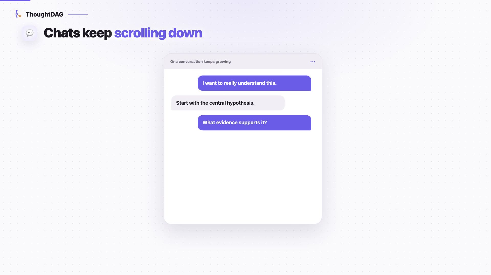
Deltix – AI-driven testing
(HN) — AI that generates and runs tests for you. Sits right on top of your automation-testing interest; worth a look at how they scope what the AI is allowed to assert.
A
Directory of 1,350+ open source alternatives to paid apps, with AI search
solves "I pay for this tool, is there a free equivalent?" Simple data + search product; the value is in curation, not code.
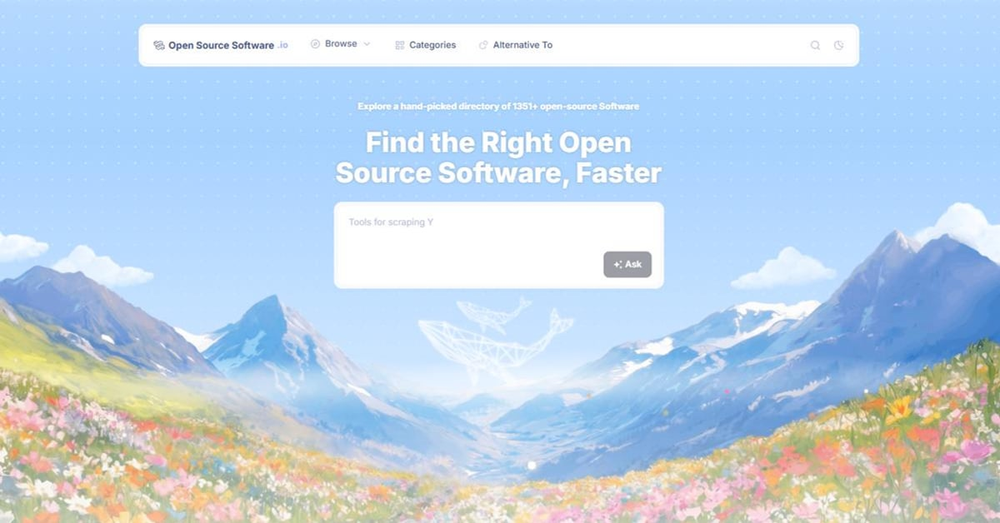
I gave Claude a motion design editor. This is what it made
giving an AI agent a purpose-built editor as its tool, instead of raw code. A pattern you could copy: build a small domain editor, let the agent drive it.
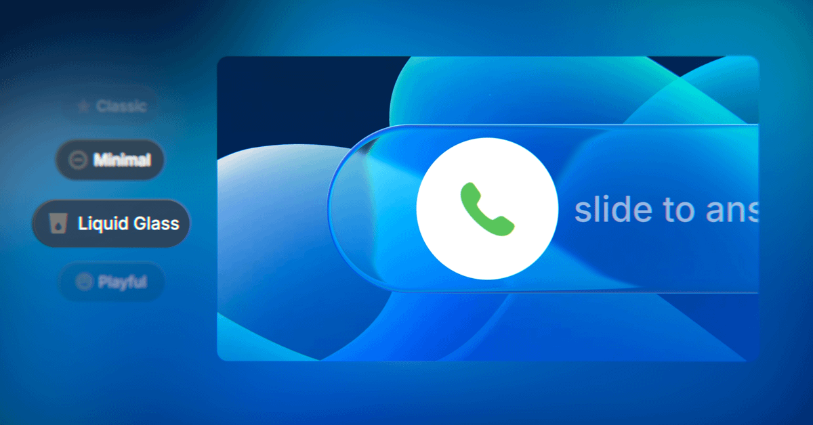
A site with prompts to replace paid app subscriptions
honest teardown of which "GPT wrapper" consumer apps you can rebuild yourself, with the prompt to do it. Problem: subscription fatigue. Cheeky but a real user need.
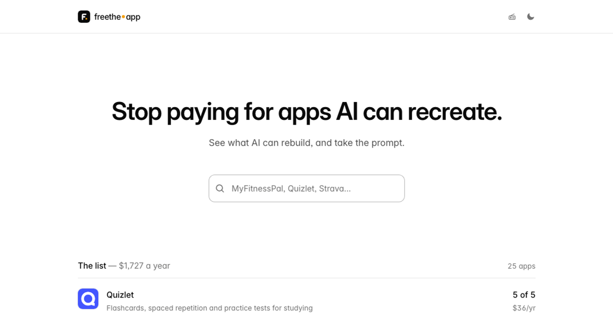
🎓 Try this
Adopt the "Don't trust Done" rule in one of your own agent workflows today: after the agent claims it finished, make it run one fresh read (re-query the DB, re-fetch the API, re-run the test) and show the result before it may say "Done."